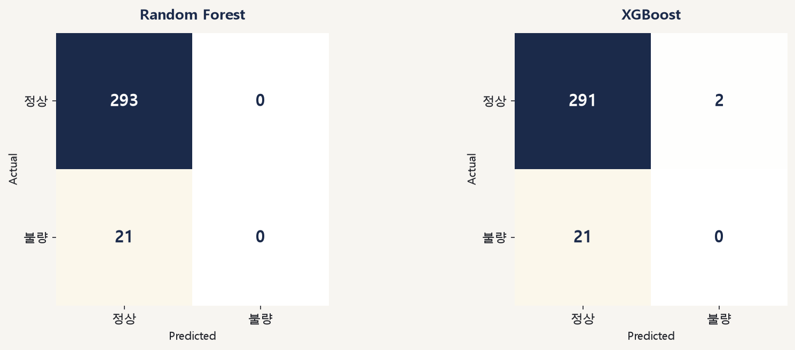
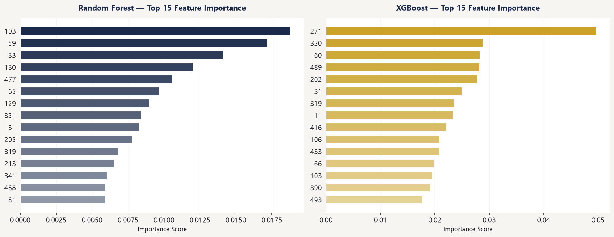

LLM 기반 반도체 Process 데이터 분석 및 수율 예측 자동화 시스템 개발
작년 진행한 SECOM 프로젝트의 심화 버전입니다. 동일한 SECOM 데이터로 Random Forest와 XGBoost를 정량 비교해 XGBoost가 AUC 0.693으로 더 안정적임을 확인했고, RF는 F1은 높지만 소수 클래스를 전혀 못 맞히는 함정까지 짚어낸 뒤 LLM이 자동으로 해석 리포트를 쓰도록 구현했습니다.
개요
작년 SECOM 수율 분석 프로젝트를 하며 '다음에는 XGBoost·LightGBM 등 다른 분류 모델과 성능을 비교하고 실시간 이상 탐지로 확장해보고 싶다'던 계획을 실행한 후속 프로젝트입니다. 같은 SECOM 데이터셋으로 결측치 처리 방식, 모델 비교, 정량 평가, 그리고 LLM 에이전트를 활용한 자동 해석 report 생성을 이용해 작년보다 한 단계 심화된 분석 파이프라인을 구축했습니다.
문제 정의
- 작년 프로젝트는 Feature Importance만으로 핵심 변수를 도출했을 뿐, 모델의 실제 분류 성능(정밀도·재현율)을 검증하지 않았음
- Random Forest 단일 모델만 사용해 다른 알고리즘 대비 상대적 성능을 알 수 없었음
- 분석 결과(수치·차트)를 현업 엔지니어가 읽고 바로 활용할 수 있는 해석과 액션으로 정리하는 과정이 수작업
접근 방법
전처리
- 결측치 20% 초과 컬럼 제거(작년과 동일 기준) 후 558개 변수로 축소
- 남은 결측치는 KNN Imputer(k=5)로 대체 — 작년의 단순 평균 대체보다 변수 간 유사도를 반영한 보간
모델링 및 평가
- Random Forest(class_weight=balanced)와 XGBoost(scale_pos_weight로 불균형 보정) 두 모델을 동일 조건으로 학습·비교
- Feature Importance뿐 아니라 F1 Score, AUC, Confusion Matrix, 불량 Recall/Precision까지 정량 평가
- 두 모델의 Top 15 Feature Importance를 비교해 공통으로 중요하게 나타난 변수를 별도로 확인
결과
모델별 정량 평가 (불량 클래스 기준):
| 모델 | F1 Score | AUC | 불량 Recall | 불량 Precision |
|---|---|---|---|---|
| Random Forest | 0.9654 | 0.6842 | 1.0000 | 0.9331 |
| XGBoost | 0.9652 | 0.6933 | 0.9932 | 0.9387 |

F1 Score만 보면 두 모델이 비슷해 보이지만, Confusion Matrix를 보면 차이가 나옵니다. Random Forest는 테스트셋의 정상(21건)을 단 한 건도 맞히지 못하고 전부 불량으로 예측했습니다 — 불량이 압도적 다수(293건)인 불균형 데이터에서 다수 클래스만 찍어도 F1·Recall이 높게 나옵니다. XGBoost는 21건 중 2건이나마 정상을 맞혀 상대적으로 더 균형 잡힌 예측을 보였고, AUC(0.693)도 더 높아 두 모델 중에서는 XGBoost가 더 나은 선택이었습니다.
scale_pos_weight 같은 옵션으로 보정하는 메커니즘)은 불균형의 방향이
바뀌어도 동일하게 성립하기 때문에, 모델 검증 파이프라인을 체계화하는 데 집중했습니다.

두 모델의 Top 15 변수 중 변수 28과 59가 공통으로 상위권에 올랐고, 특히 변수 59는 작년 Random Forest 단일 모델 분석에서도 1위였던 변수입니다. 59, 130, 33, 348은 작년 Top 5와 이번 Random Forest Top 5에 모두 포함되어, 두 번의 독립적인 분석에서 일관되게 중요한 변수로 확인되었습니다.
인터랙티브 데모
모델이 실제로 뱉는 건 0~1 사이의 확률 점수 하나뿐이고, 이걸 "정상/불량"으로 가르는 기준선(threshold)은 사람이 정하는 값입니다. 위 결과표는 threshold=0.5 기준이었는데, 이 기준을 낮추면 애매한 점수까지 전부 "불량"으로 넘어가서 Recall은 오르지만 오탐(FP)도 같이 늘어나는 trade-off가 생깁니다. 이 관계를 눈으로 확인하고 싶어서 만든 대시보드입니다.
314개 테스트 샘플 각각의 예측 확률값은 따로 저장해두지 않고 F1·AUC·Confusion Matrix 같은 집계 결과만 리포트에 남겨서 원본 점수를 그대로 가져올 수는 없었습니다. 대신 두 모델의 점수 분포를 흉내낸 가상의 점수 배열을 만들고, threshold=0.5에서는 실제 리포트의 Confusion Matrix(RF F1 0.9654·AUC 0.6842, XGBoost F1 0.9652·AUC 0.6933)와 똑같은 숫자가 나오도록 점수 범위를 역산해서 맞춰뒀습니다. 슬라이더를 움직이면 그 threshold 기준으로 TP/FP/FN/TN을 다시 세고, Precision·Recall·F1·ROC를 그 자리에서 재계산해서 그려주는 방식이라, 0.5 지점 말고는 실측이 아니라 근사치라는 점은 감안하고 봐주세요.
LLM 해석 리포트
분석 결과(성능 지표, Feature Importance)를 텍스트로 정리해 Gemini(LangChain PromptTemplate)에 전달하면, 아래 4개 섹션으로 구성된 해석 리포트를 자동으로 작성하도록 프롬프트를 설계했습니다.
- 모델 성능 해석: 두 모델의 성능 차이를 불량 탐지 관점에서 해석
- 핵심 Feature 분석: SECOM 변수명이 익명화(숫자)되어 있어, 일반적인 반도체 Process 센서(Process 조건·장비 상태·전후 Process 영향) 관점에서 의미를 추론
- 수율 개선 제안 3가지: 현업 엔지니어가 바로 쓸 수 있는 구체적 액션
- 분석의 한계 및 개선 방향: 이 분석에서 아쉬운 점과 실제 Process 적용 시 고려사항
실제로 Gemini 2.5 Flash가 생성한 리포트의 시작 부분입니다:
전체 리포트 원문 보기 (Gemini 2.5 Flash 생성, 무편집)
제공해주신 데이터를 바탕으로 Random Forest와 XGBoost 두 가지 머신러닝 모델을 활용하여 수율 예측 분석을 수행하였습니다. 분석 결과를 토대로 모델 성능 해석, 핵심 Feature 분석, 수율 개선 제안 및 분석의 한계점을 정리하여 보고드립니다.
1. 모델 성능 해석
두 모델 모두 매우 높은 F1 스코어를 기록하여 불량 탐지 및 양품 분류에 있어 뛰어난 성능을 보였습니다.
- Random Forest: F1=0.9654, AUC=0.6842
- XGBoost: F1=0.9652, AUC=0.6933
F1 스코어는 정밀도(Precision)와 재현율(Recall)의 조화 평균으로, 특히 불균형 데이터셋에서 모델의 성능을 평가하는 데 유용합니다. 두 모델 모두 0.965를 넘는 매우 높은 F1 스코어를 달성했다는 것은, 불량 웨이퍼(또는 랏)를 정확하게 예측하고(높은 정밀도), 실제 불량 웨이퍼를 놓치지 않고 잘 찾아내는(높은 재현율) 능력이 매우 우수하다는 것을 의미합니다. 이는 수율 엔지니어 관점에서 불량 발생 가능성이 있는 Process를 사전에 감지하고 조치하는 데 있어 모델의 예측 신뢰도가 매우 높음을 시사합니다.
AUC(Area Under the ROC Curve)는 모델이 양성 클래스와 음성 클래스를 얼마나 잘 구분하는지를 나타내는 지표입니다. XGBoost가 Random Forest보다 약간 높은 AUC(0.6933 vs 0.6842)를 보였으나, 그 차이는 미미합니다. 두 모델 모두 0.7에 가까운 AUC를 기록하여, 불량과 양품을 구분하는 능력이 합리적인 수준임을 보여줍니다.
2. 핵심 Feature 분석
두 모델에서 공통으로 중요하게 도출된 Feature와 각 모델별 상위 Feature를 분석하여 반도체 Process에서의 의미를 추론합니다. SECOM 데이터의 Feature 이름이 익명화(숫자)되어 있으므로, 일반적인 반도체 Process 센서 관점에서 해석합니다.
두 모델 공통 상위 Feature: 59, 28
Feature 59와 28은 Random Forest와 XGBoost 모두에서 높은 중요도를 보인 핵심 Feature입니다. 이는 이 두 Feature가 수율 변동에 가장 직접적이고 강력한 영향을 미치는 Process 파라미터 또는 센서 데이터일 가능성이 매우 높다는 것을 의미합니다. 일반적인 반도체 Process에서 수율에 큰 영향을 미치는 파라미터로는 온도, 압력, 가스 유량, RF Power/DC Voltage, Process 시간, 엔드포인트 감지 신호 등이 있으며, Feature 59와 28은 특정 핵심 Process 단계의 주된 온도·압력·가스 유량·RF Power와 같은 핵심 제어 파라미터일 가능성이 높습니다.
종합적으로 볼 때, Feature 59와 28은 수율에 대한 1차적인 핵심 드라이버이며, 각 모델에서 추가로 도출된 Feature들은 이 핵심 드라이버와 상호작용하거나, 특정 Process 조건에서 수율에 영향을 미치는 2차적 또는 보조적인 요인들로 해석될 수 있습니다.
3. 수율 개선 제안
- 핵심 Feature(59, 28)에 대한 집중적인 Process 모니터링 및 제어 강화: 두 Feature가 어떤 Process 단계의 어떤 물리적 파라미터인지 우선 식별하고, 실시간 모니터링 빈도를 높여 SPC 관리 한계를 더 엄격하게 설정
- 모델별 상위 Feature에 대한 심층 분석 및 Process 연관성 파악: 상위 5~10개 Feature의 물리적 의미를 파악하고 과거 데이터·수율 변동 이력을 교차 분석
- Feature 값과 수율 간 정량적 관계 분석 및 Process 최적화 연구: 회귀 분석·Partial Dependence Plot·SHAP 값 분석으로 각 Feature의 최적 운영 범위를 도출하고 DOE로 Process 파라미터 최적화 시도
4. 분석의 한계 및 개선 방향
- Feature 익명화의 한계: Feature 번호와 실제 Process 센서·파라미터 이름을 매핑하는 작업이 선행되어야 분석 결과가 실질적인 액션으로 이어질 수 있음
- 인과 관계 파악의 한계: 모델은 상관관계를 잘 찾아내지만 인과 관계를 의미하지는 않으므로, 도메인 지식 기반 근본 원인 분석과 필요시 DOE를 통한 인과 검증이 필요
- 모델 해석력의 한계: Feature 중요도만으로는 방향성·최적 범위를 알 수 없어 SHAP·LIME 같은 설명가능 AI(XAI) 기법 추가 적용이 필요
- 데이터의 시간적·공간적 맥락 부족: 특정 시점 데이터라 지속적 재학습과 장비별·라인별 맞춤 분석, 유지보수 이력 등 맥락 정보 결합이 필요
배운 점 & 한계
- F1 Score 하나만으로는 모델의 실제 예측 편향을 놓칠 수 있다는 것을 Random Forest의 Confusion Matrix에서 직접 확인했습니다 — 불균형 데이터일수록 클래스별 지표와 혼동행렬을 함께 봐야 한다는 점을 체감했습니다
- class_weight='balanced'나 scale_pos_weight 같은 불균형 보정 옵션을 적용해도 실제로 소수 클래스를 얼마나 잘 잡아내는지는 별도로 검증해야 한다는 것을 배웠습니다
- LLM에게 정량 결과를 그대로 던지는 것이 아니라 원하는 리포트 구조(성능 해석 → Feature 분석 → 액션 → 한계)를 프롬프트에 명시해야 실무에 바로 쓸 수 있는 리포트가 나온다는 것을 확인했습니다
- 향후에는 SHAP 기반 설명가능 AI를 추가하고, Gemini API 유료 티어 또는 로컬 LLM으로 전환해 요청 한도 문제를 해결하고 싶습니다